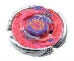

Storm Capricorne M145Q
| Storm Capricorne M145Q | |
|  | |
| Number: | BB-50 |
|---|---|
| System: | Hybrid Wheel System |
| Type: | Attack |
Contents
Face: Capricorne
The Face illustrates Capricorn, the tenth astrological sign in the Zodiac. This Seagoat is depicted as having six horns. Hasbro's version of the Face mark in its Fury Capricorn release omits the word "CAPRICORNE" on the banner at the bottom of this animal.
Clear Wheel: Capricorne
- Weight: 2.9 grams
The Capricorne Clear Wheel is quite angular, representing two goat heads, tailed by long, banded horns, and another two small Spikes separating each head from the other's horns. While not a particularly useful part, the angular design can allow for some added Smash Attack, and if one has no better Clear Wheels, it can be a decent choice for such customizations, as long as it does not obscure the Metal Wheel's contact points. This first release of Capricorne is a clear Bright Orange.
Metal Wheel: Storm
- Weight: 30.4 grams
The main shape of Storm consists of three wing-like forms, each with slightly jagged ends, which are used for mediocre Smash Attack. While paired with a 100 track and a Rubber Flat Bottom, Storm was once been a top tier Metal Wheel. It has since been outclassed by countless other Metal Wheels, such as Vulcan, Lightning and Blitz. Storm should not be considered for competitive use, unless there are absolutely no other available options.
Track: Move 145
| Weight: | 4.2 gram | Full Width: | 27.0 mm | Full Height: | 14.50 mm |
M145 is a round Track, with a mode change gimmick. The connectors which the Bottom attach to can be moved into two different modes, designated as Large Jump and Small Jump.
When the connectors are manually moved to the Large Jump position, the connectors are located off center. The Bottom is therefore off center, and the Beyblade moves erratically, and will bounce up and down on the Stadium floor.
In the Small Jump position, the connectors are only slightly off center. In this position, the Beyblade will not jump nearly as much; instead, it will move with far more regularity.
M145 bounces most vigorously when used with Sharp series Bottoms, such as Sharp and Ball Sharp. It's also the first part in the whole Beyblade toyline to have a real, effective jumping gimmick, regardless of how useful it is.
This Track's gimmick is seen as purely for entertainment and interest; it has yet to be used in any competitive customizations, as it is too unpredictable. When the Beyblade is temporarily in the air when it is bouncing, it is extremely easy to KO, as its friction with the floor is zero. Beyblades using this Track also suffer from extremely low Stamina, as the off-center Bottom disrupts the rotation severely.
TAKARA-TOMY's M145 is reportedly less solid in its mode change than Hasbro's. The connectors, upon considerable and punctual impact, can slide into their other position on their own, which is against the nature of the Track's gimmick.
Bottom: Quake
| Weight: | 0.6 gram | Full Width: | 16.5 mm | Tip Width: | 6 mm | Full Height: | 9 mm | Tip Height: | 3.50 mm | Cutoff Height: | 1 mm | Declination Length: | 4 mm | Declination Angle: | ~ 30° |
Quake is a uniquely shaped Bottom; it is similar to a wider version of Extreme Flat, but with a 60° cut through it. As a result, it is non symmetrical. In practice, this performs similarly to WF in movement, albeit with small jumps.
The Bottom is clearly designed to be combined with M145 to produce the jumping gimmick. In fact, on top of the two modes M145 already has, Q adds two other modes to this combination. Although without official names, they are achieved by either positioning the angled side of Q towards the center of the Beyblade, or towards the outside. Bringing the total of mode changes to four, all of them are still useless, but the position of the angled side when in Small Jump mode can at least slightly compensate for the off-center connectors, because the flat part of the tip is brought as close to the center as possible while the decline faces the exterior.
IMPORTANT: Mold Variations
Two molds of Q exist: the first mold has the most acute angle, leaving barely a milimeter of flat surface to the end of the tip. This sharp change creates a lot of erratic movements to an otherwise normal flat Bottom's pattern. When paired with M145, this mold therefore greatly accentuates the height of the jumps in both Large and Small Jump modes, decreasing the Beyblade's Stamina even more. The first mold is only available in TAKARA-TOMY's Booster of Storm Capricorne M145Q.
The second mold leaves quite a few more milimeters of flat tip before cutting into a sharp angle. Logically, this less severe decline brings more calm to Q's movement pattern while still causing intermittent small jumps once in a while. All of Hasbro's Q and all of the later releases of Q by TAKARA-TOMY and SonoKong are of this second mold.
Other Versions
- Dark Capricorne 105RF ? Hybrid Wheel Reshuffle Set (Attack & Balance) (Purple)
- Flame Capricorne T125HF ? Random Booster Vol.4 Mirage Virgo (Grey Brown)
- Rock Capricorne T125D ? Random Booster Vol.4 Mirage Virgo (Light Grey)
- Screw Capricorne 90MF - BB-92 Booster (Blue)
Gallery
Overall
While M145 and Q are interesting gimmick parts, they are ultimately useless in competitive customizations. There is little to no reason to buy this Beyblade.